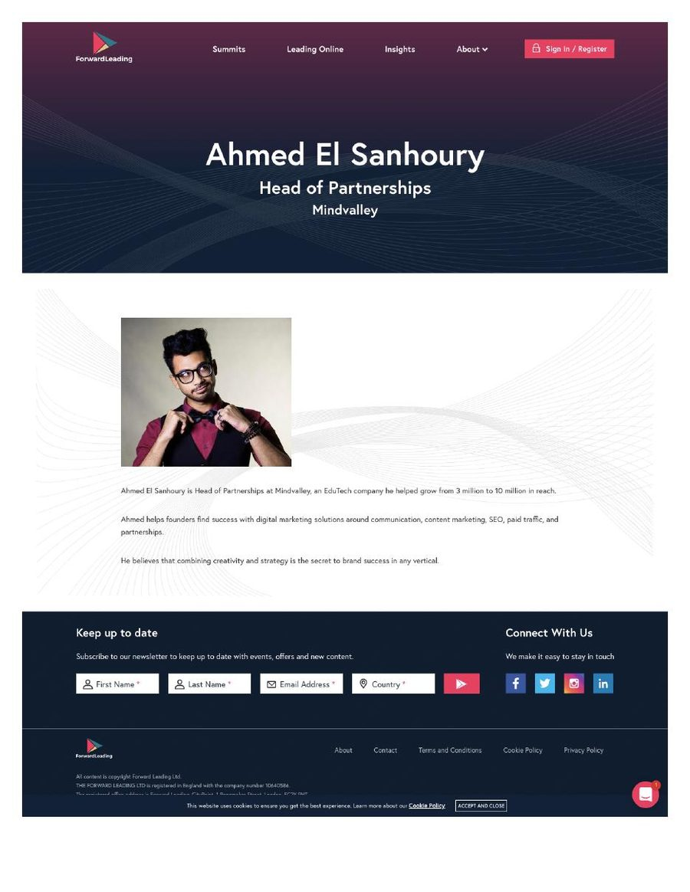
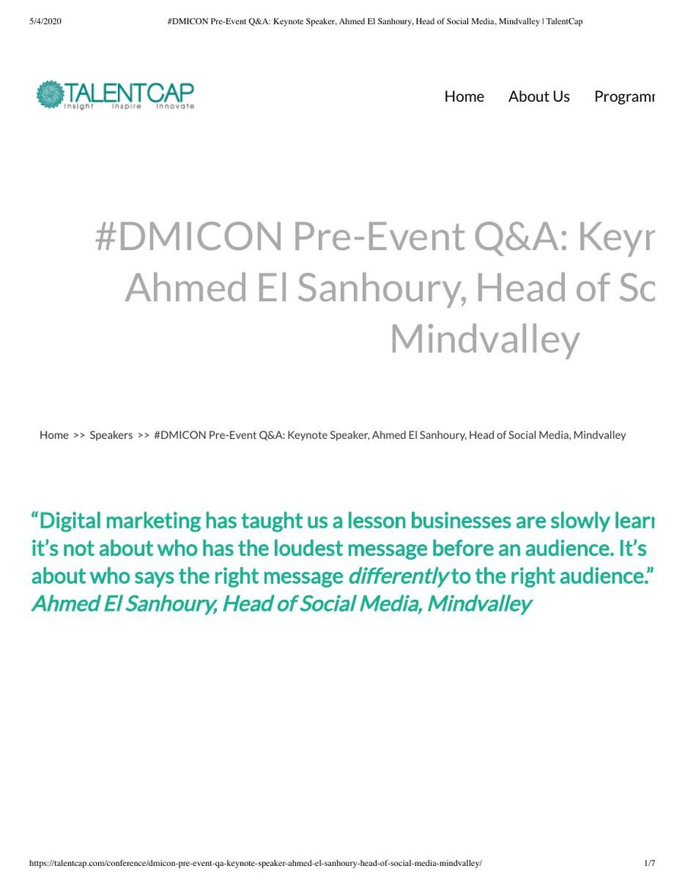
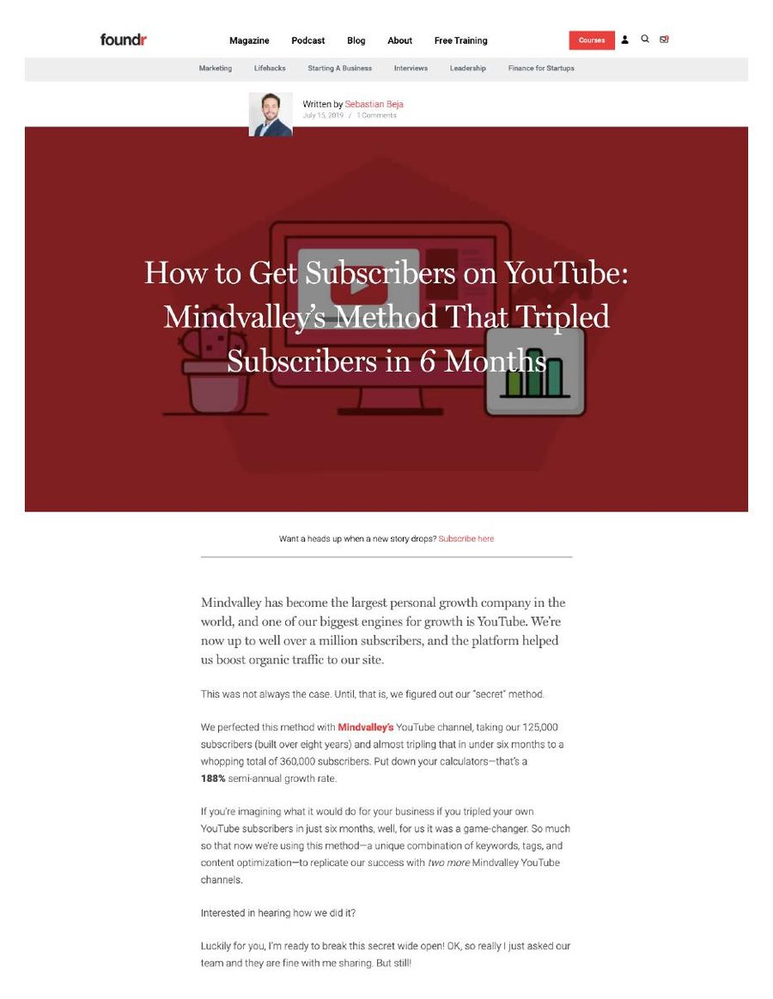

10M+
Network reach at peak
2017 - 2020
When I joined Mindvalley in 2017, influencer marketing was not a department - it was ad hoc creator relationships with no programme, no measurement, no model for the relationship itself. I built the function on relationship-based agreements instead of paid placements. It reached 10M+ people (2017 - 2020), went ROI-positive in month one, and spent $0 on placements. Every number on this page names its source; the gaps are marked.
Personal growth is about as close to a native creator-economy category as marketing gets, and Mindvalley was doing nothing programmatic with it. Influencer work was ad hoc: creator relationships with no programme, no measurement, no model for the relationship itself.
The obvious fix was to buy posts, the industry default. The real problem was that buying posts was the wrong instrument here twice over - there was no budget appetite for it, and paid advocacy converts worse in a trust category. The programme had to be cost-effective, measurable, and scalable without a placement budget.
Three campaigns shipped; the harder build was a way to attribute what influencer work usually leaves untracked.
To attribute the unattributable, we tracked YouTube subscriber spikes on partner-video publish days. The day "Upgrade Your Consciousness" published, Mindvalley's channel saw a 9.2% increase in new subscribers.
This model became the blueprint for the 48-creator Always-On network I later built at Canonical.
Three third-party pages from the era survive as archived captures: a Forward Leading speaker profile stating the reach growth, a DMICON keynote Q&A, and a Foundr feature on the YouTube method. Each frame links to the live page.



| Metric | Value | Source |
|---|---|---|
| Network reach at peak | 10M+ | 2017 - 2020 |
| Reach added, single period | 7M | Q2 2019 strategy doc |
| Placement budget | $0 | Relationship-based agreements |
| ROI | Positive from month one | Basis NEEDS_HUMAN |
| Subscriber spike, partner-video day | +9.2% | YouTube · "Upgrade Your Consciousness" |
The tradeoff is real and worth stating plainly: a relationship-based programme is slower to build and harder to scale quickly than paid placement. It is also significantly more durable, and more effective per impression. The ROI is real too, but its calculation basis needs stating openly - placements cost $0, so the true costs were team time and faculty access, not media spend.
NEEDS_HUMAN: ROI calculation basis; per-campaign OKR attainment; linkable Q2 2019 and Superbrain decks